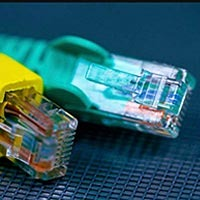

Curso de Redes
Una red de computadoras, también llamada red de ordenadores, red de comunicaciones de datos o red de informática, es un conjunto de equipos informaticos y software conectados entre sí, por medio de dispositivos físicos que envían y reciben impulsos eléctricos, ondas electromagneticas o cualquier otro medio para el transporte de datos, con la finalidad de compartir información, recursos y ofrecer servicios.
Como en todo proceso de comunicación, se requiere de un emisor, un mensaje, un medio y un receptor. La finalidad principal para la creación de una red de ordenadores es compartir los recursos y la información en la distancia, asegurar la confiabilidad y la disponibilidad de la información, aumentar la velocidad de transmisión de los datos y reducir el costo. Un ejemplo es Internet, el cual es una gran red de millones de ordenadores ubicados en distintos puntos del planeta interconectados básicamente para compartir información y recursos.
La estructura y el modo de funcionamiento de las redes informáticas actuales están definidos en varios estándares, siendo el más importante y extendido de todos ellos el modelo TCP/IP utilizado como base para el modelo de referencia OSI. Este último, concibe cada red como estructurada en siete capas con funciones concretas pero relacionadas entre sí; en TCP/IP se habla de cuatro capas, los cuales también están regidos por sus respectivos estándares.